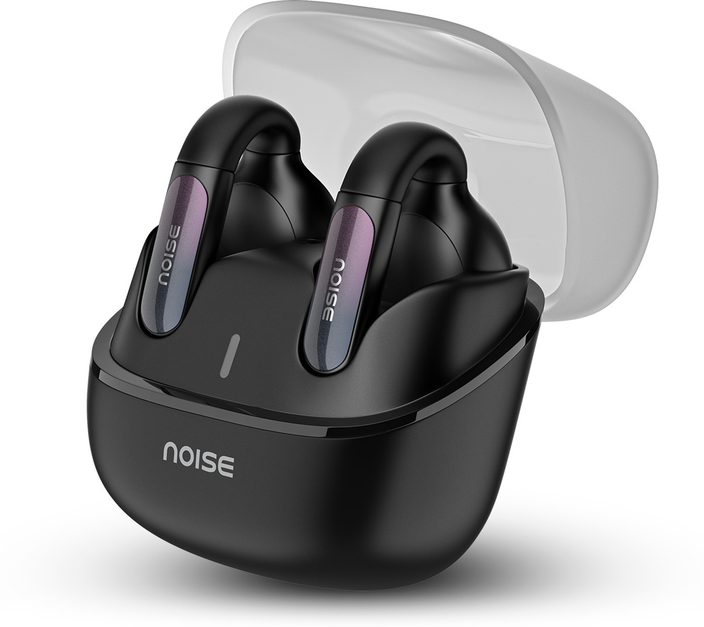
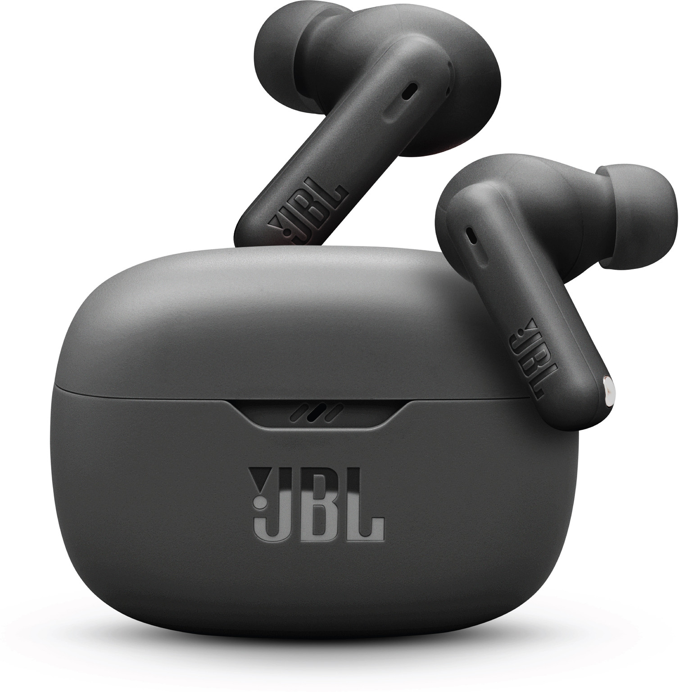
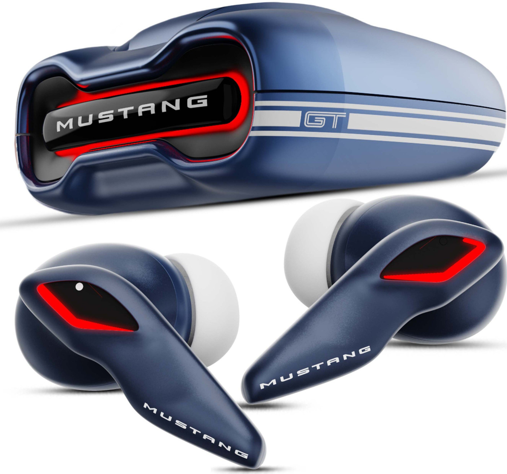

Introduction: Finding the Best Budget Earbuds
Are you looking for great sounding earbuds without breaking the bank? You're not alone. Many students and professionals want quality audio on a budget, but finding the right pair can be challenging with so many options available.
In this guide, we've tested and reviewed the best earbuds under ₹2000 that deliver excellent sound quality, comfortable fit, and reliable battery life. Whether you need them for studying, working from home, or entertainment, we've got the perfect option for you.
📌 Pinterest Optimized Image: Best Earbuds Under 3000 Comparison
1. Noise Air Clips 2

Noise Air Clips 2
₹1,999The Noise Air Clips 2 is a unique pair of open-ear wireless earbuds designed for comfort and awareness of your surroundings. It features a clip-on open beam design that sits outside the ear, allowing you to listen to music while staying aware of the environment. Equipped with 12mm dynamic drivers and AirWave™ technology, these earbuds deliver clear sound and balanced audio. With Bluetooth 5.3 connectivity, dual device pairing, and long battery life, the earbuds are ideal for work, calls, and everyday listening.
Key Features:
- ✓ Up to 40 hours total battery life
- ✓ 12mm Dynamic Drivers with AirWave™ technology
- ✓ Open-ear clip design for all-day comfort
- ✓ Dual device connectivity
- ✓ Bluetooth 5.3 with IPX5 water resistance
Pros & Cons:
✓ Pros
- Comfortable open-ear design
- Good battery backup
- Dual device connectivity
- Lightweight and stylish
✗ Cons
- Not very bass-heavy
- Sound leakage at high volume
- Not ideal for gaming
1. JBL Wave Beam 2

JBL Wave Beam 2
₹2,999The JBL Wave Beam 2 is a premium pair of true wireless earbuds designed to deliver powerful JBL Pure Bass sound and advanced features. It comes with 8mm dynamic drivers and Active Noise Cancelling with Smart Ambient technology, allowing you to enjoy music while controlling how much outside sound you hear. With Bluetooth 5.3 connectivity, four microphones for clear calls, and long battery life, these earbuds are perfect for music, calls, travel, and everyday use.
Key Features:
- ✓ Up to 40 hours total battery life
- ✓ 8mm Dynamic Drivers with JBL Pure Bass Sound
- ✓ Active Noise Cancelling with Smart Ambient
- ✓ 4 microphones for clearer calls
- ✓ Bluetooth 5.3 with IP54 water & dust resistance
Pros & Cons:
✓ Pros
- Powerful JBL Pure Bass sound
- Active Noise Cancelling support
- Good call quality with 4 mics
- Long battery life with fast charging
✗ Cons
- Case is slightly bulky
- ANC is not as strong as premium models
- No wireless charging
1. Goboult Mustang Torq

Goboult Mustang Torq
₹1,799The Goboult Mustang Torq is a stylish pair of true wireless earbuds designed for gamers and music lovers. It features powerful 13mm dynamic drivers that deliver deep bass and clear sound for an immersive listening experience. With Bluetooth 5.4 connectivity, quad-mic ENC technology for clearer calls, and Combat™ low-latency gaming mode, these earbuds are perfect for gaming, music, and streaming. The earbuds also provide long battery life and IPX5 water resistance, making them suitable for workouts and daily use.
Key Features:
- ✓ Up to 50 hours total battery life
- ✓ 13mm Dynamic Drivers for powerful bass
- ✓ Quad Mic ENC for clearer calls
- ✓ Combat™ Mode with 45ms low latency
- ✓ Bluetooth 5.4 with IPX5 water resistance
Pros & Cons:
✓ Pros
- Very strong bass and loud sound
- Low-latency gaming mode
- Long battery backup
- App support with customizable settings
✗ Cons
- No active noise cancellation
- Case design may feel bulky
- LED lights may drain battery slightly
Comparison Table: Best Earbuds Under ₹2000
| Model | Price | Battery Life | ANC | Water Resistant | Best For |
|---|---|---|---|---|---|
| Realme Buds Air 3 Neo | ₹1,299 | 32 hours | ❌ | IPX4 | Battery Life |
| JBL Tune 660NC | ₹1,799 | 44 hours | ✓ | ✓ | Noise Cancellation |
| boAt Airdopes 131 | ₹999 | 8 hours | ❌ | IPX5 | Budget |
| Soundcore Space A40 | ₹1,899 | 50 hours | ✓ | ✓ | Premium Features |
| OPPO Enco Buds 2 | ₹1,599 | 11 hours | ⚡ (Calls) | IP54 | Balanced Option |
Conclusion: Which Earbuds Should You Buy?
Best Overall: Soundcore Space A40 - If you want the best overall experience with great noise cancellation, excellent sound quality, and outstanding battery life, the Soundcore Space A40 is worth the extra investment at ₹1,899.
Best Budget Option: boAt Airdopes 131 - For students on a tight budget, the boAt Airdopes 131 at ₹999 offers great value with decent sound quality and water resistance. You can't beat the price.
Best Battery Life: JBL Tune 660NC - If battery life is your priority, the JBL Tune 660NC delivers an incredible 44 hours with its charging case, perfect for long trips and work sessions.
All five options are excellent choices under ₹2000. Your final decision should depend on your priorities: budget, battery life, noise cancellation, or overall sound quality. Whichever you choose, you'll get great value for your money.